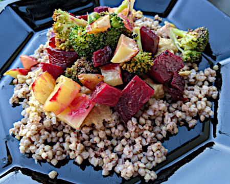

| Zutaten für 4 Personen: | |
| 400g | Randen |
| 300g | Kürbis |
| 5 El | Olivenöl |
| Salz | |
| Pfeffer | |
| 1 | Orange |
| 100g | Cachewnüsse |
| 4 dl | Gemüsebouillon |
| 200g | Buchweizen |
| 1 | Schalotte |
| 1 | Knoblauchzehe |
| 1 Tl | Senf |
Ofengemüse: Randen und Kürbis in 1cm grosse Würfel schneiden und auf einem mit Backpapier belegten Blech verteilen. Öl darüberträufeln, mit 1/2 Tl Salz und wenig Pfeffer würzen.
Backen: Ca. 15 Min. in der Mitte des auf 220°C vorgeheizten Ofens. Eventuell eine Orange filettieren. Gemüse herausnehmen, Orangen und 50g (die Hälfte) der Cashews beigeben, ca. 10 Min fertig backen.
Buchweizen: Bouillon in einer Pfanne aufkochen, Buchweizen beigeben, ca. 3 Min kochen. Pfanne von der Platte nehmen, zugedeckt ca. 15 Min. quellen lassen.
Cashew-Dressing: Die restlichen 50g Cashewnüsse in einer Pfanne ohne Fett rösten. 1 El Öl, Schalotte und Knoblauch, fein gehackt, beigeben, mitdämpfen. Orangenschale mit dem Zestenmesser abziehen und die Orange auspressen. Orangenschale und Orangensaft beigeben, aufkochen und im Mixbecher pürieren. 1 Tl Senf und 3/4 Tl Salz beigeben, 3 El Öl in einem dünnen Faden dazugiessen, weiter pürieren, bis das Dressing sämig ist.
Anrichten: Buchweizen mit der Hälfte des Dressings mischen, auf einer Platte anrichten. Den Rest des Dressings darauf verteilen. Dann das Ofengemüse darauf verteilen. Warm servieren.
441 kcal pro Person
Fooby Veganuary 2023 S.31
Beim ersten Kochen zu viel Orange was nicht gut war. Beim zweiten Versuch schon deutlich besser, mit nur einer Orange. RE, Mai 2023
@LINKBACK_TAG@ @WAKELOCK@